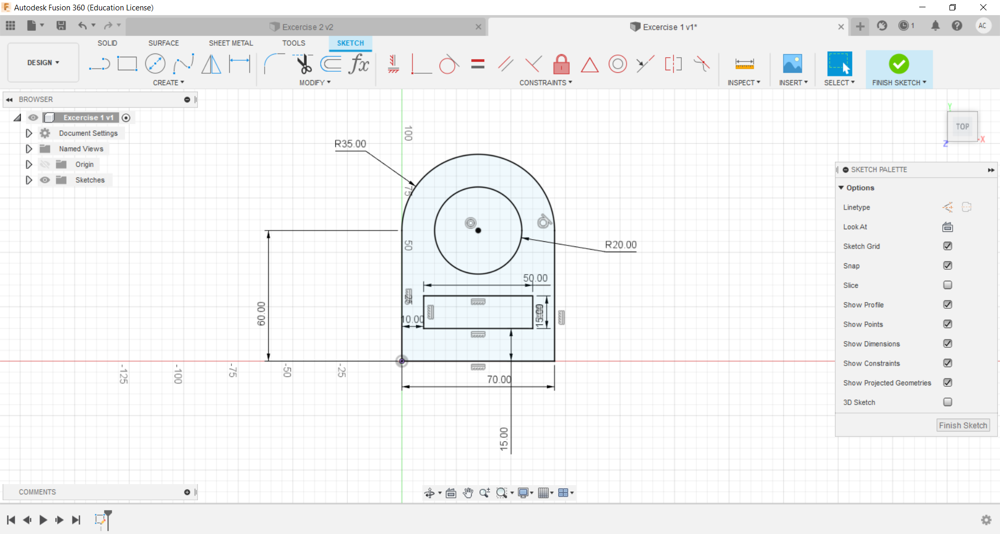

This is where is exciting part of this module begins!! What is Digital Fabrications without CAD? In this module we will be using Fusion360 as the main CAD system. This application is used as it not only has a integrated CAD software but also integrated Computer Aided Machining(CAM) and Computer Aided Engineering(CAE), Thus, this application is highly useful in the field of Digital Fabrications!
As you can see from the picture above, I have drawn a 2D spanner on Fusion360. I have taken CAD as a core module in year 1 and this is very simliar to the drawings in AutoCAD. However there are some major changes that make drafting much more easier compared to AutoCAD!
One major change that is in Fusion360 is the use of contraints. These contraints are very useful as it helps to align and span certain lines to precise locations. This is really helpful as somtimes when some parameters or dimensions need to be changed the lines can automatically change too as it has a contraint funtion to fufill.
Click here to return back to documentations!!